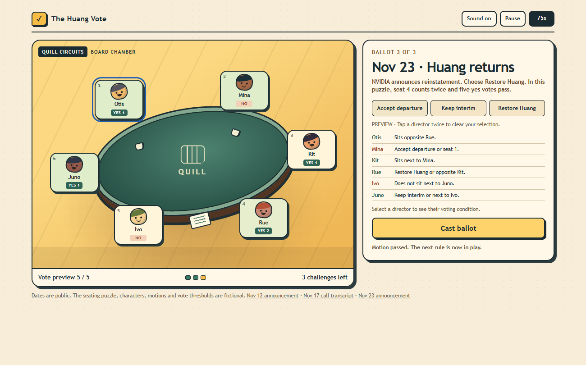
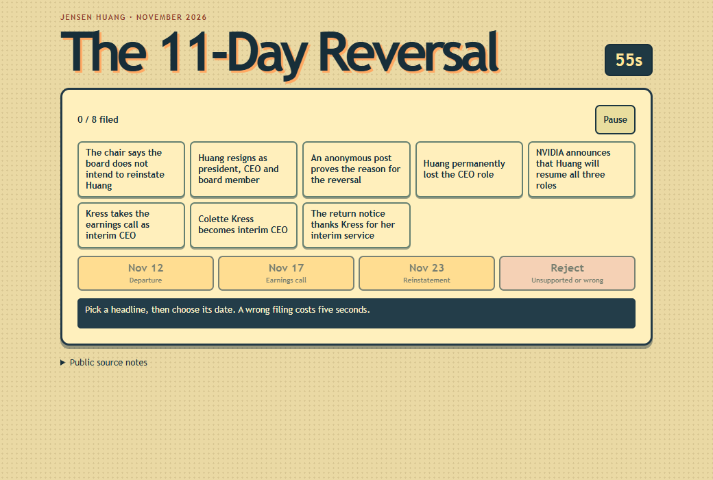

Jensen Huang’s
Comeback Arcade
Nov 12: resignation · Nov 17: no planned return · Nov 23: reinstatement.
Pick a game

The Huang VoteBoardroom puzzle
Pick the right motion for Nov 12, 17 and 23, then build a coalition to pass it.

Kress: The Interim ShiftFab dispatch
Keep the chip lines moving during Colette Kress’s interim shift and meet two dated deadlines.

Jensen’s ReturnArcade runner
Jump and slide for three dated bulletins. Bring the full record of Huang’s return to HQ.

The 11-Day ReversalTimeline challenge
File eight headlines under the actual announcement dates or reject unsupported claims.

Huang Headline CheckTiming game
Report Huang’s resignation and return without letting an unsupported claim slip on air.